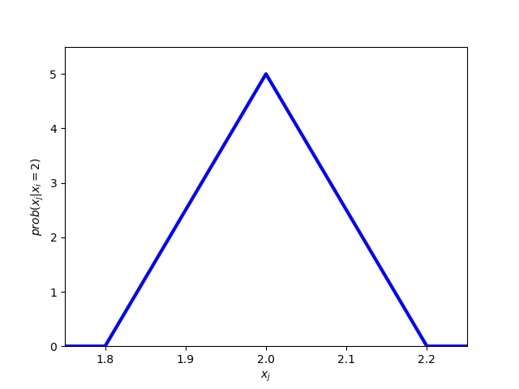

Global games
We use the stag hunt as in Carlsson and van Damme (1993):
| H2 | S2 | |
|---|---|---|
| H1 | x,x | x,0 |
| S1 | 0,x | 4,4 |
where \(x\in[-1,5]\) and each player draws an iid signal xi from a uniform distribution on \([x-0.1,x+0.1]\). Ex ante each state \(x\in[-1,5]\) is equally likely.
1 Calculate beliefs over other player's signal
First, we use Bayes' rule to determine your belief over the true state x when your signal is xi. With a slight abuse of notation we refer with "prob" to densities. We then get
\[prob(x|x_i) = \frac{prob(x_i|x) prob(x)}{prob(x_i)}=\begin{cases}0&\text{ if }x_i\not\in[x-0.1,x+0.1]\\ \frac{5*1/6}{5*0.2/6} &\text{ else}\end{cases}\]
which means that a player with signal xi views all states in \([x_i-0.1,x_i+0.1]\) as equally likely (and all other states as impossible).
Now we turn to the question what is \(prob(x_j|x_i)\)? Well this is the same as \[prob(x_j |x_i)=\int_{-1}^{5}prob(x_j|x) prob(x|x_i) \,dx.\] Note that \(prob(x_j|x)\) is 5 if \(x_j\in[x-0.1,x+0.1]\) and 0 otherwise. We can therefore rewrite the expression as \[prob(x_j |x_i)=\int_{x_j-0.1}^{x_j+0.1}5 prob(x|x_i) \,dx.\] From the expression for prob(x|xi) above, we now already know that \(prob(x_j|x_i)=0\) if \(|x_j-x_i|>0.2\). Otherwise, we integrate 5*5 over \([x_i-0.1,x_i+0.1]\cap[x_j-0.1,x_j+0.1]\). Hence, we get \(prob(x_j|x_i)=25*(0.2-|x_i-x_j|)\). Hence, the density \(prob(x_j|x_i)\) is a triangle with density with its maximum at xi.
from numpy import linspace from matplotlib import pyplot as plt xj = linspace(1.75,2.25,51) prob = [max(0,25*(0.2-abs(item -2))) for item in xj] fig = plt.figure() plt.axes(xlim=(1.75,2.25),ylim=(0,5.5)) plt.xlabel('$x_j$') plt.ylabel('$prob(x_j|x_i=2)$') plt.plot(xj,prob,'b',linewidth = 3) plt.savefig('global_density.png') 'global_density.png'
global_density.png

Figure 1: Density of player i's belief over \(x_j\) given \(x_i=2\)
2 Iterative elimination of strictly dominated strategies
If x<0, Si is a dominant strategy. If xi<-0.1, player i knows that x<0 and it is therefore dominant to play Si. Similarly, if x>4, Hi is a dominant strategy. If xi>4.1, player i knows that x>4 and it is therefore dominant to play Hi.
It is important to understand that a strategy in this game is a function si: [-1.1,5.1]→[0,1]. Put differently, a strategy gives for each signal that player i might get a probability with which he plays Si (he will play Hi with the counter probability). So we can plot a strategy in a figure where we have signals on the horizontal axis and the probability to play Si on the vertical axis.
What do our initial ideas about dominance mean in terms of the plot? Well it means that a rational player will choose probability 0 if xi<-0.1 and probability 1 for xi>4.1.
Now we will go a step further using dominance. By playing Hi, player i guarantees himself x. Given signal xi∈[-0.1,4.1], the expected payoff from playing Hi is xi because the beliefs of player i are symmetric. Consequently, player i should play Hi whenever he receives a signal above 4: Then the expected payoff from playing Hi is above 4 which is the maximum payoff he can get when playing Si. Similarly, a player should play Si whenever he receives a signal xi<0: In this case, the expected payoff from Hi is xi<0 while the minimum payoff when playing Si is 0.
We can therefore conclude that the strategy of a rational player assigns 0 to all xi<0 and 1 to all xi>4.
So far we only utilized the fact that players are rational. Now we are going to utilize that they know that the other player is rational. Player i knows that j will play Sj whenever xj<0. What should i do when he receives signal xi=0.01? When he plays Hi, his expected payoff is 0.01. When he plays Si, his payoff is at least prob(xj<0)*4 because j plays Sj when xj<0. Given that xi=0.01, prob(xj<0) is (from i's point of view) almost 1/2. Hence, Si will give him a much larger payoff than Hi and a rational player i will play Si. Is the same true for xi larger than 0.01? Well for slightly larger xi it is. For much larger x1 (e.g. xi=0.2) we cannot say that prob(xj<0) is large and therefore the argument does not work. Which is the largest xi for which the argument works? This is the first question the program below answers (it turns out to be 0.146).
The program goes then further: We just established that a rational player who knows that the otehr player is rational plays Si whenever xi<0.146. If i knows that j knows that i is rational, then i can expect j to play Sj whenever xj<0.146. But what should i then do when xi = 0.147? Playing Hi gives him an expected payoff of 0.147. Playing Si gives payoff 4*prob(xj<0.146). As xi=0.147, prob(xj<0.146) is (from i's point of view) almost 1/2 and therefore Si gives the higher payoff. What is the highest xi for which this argument works? It turns out to be 0.2722.
Now we can iterate again. An, of course, we can do the same from above starting with 4.0. This is what the program below does.
from scipy import integrate from scipy import optimize from matplotlib import pyplot as plt from matplotlib import animation from prettytable import PrettyTable e = 0.1#epsilon #returns the expected utility of playing Si minus exp utility of playing Hi #input: cutoff of other player x in [0,1], own signal xi in [0,1] def DU(x,xi): def prob(x,y):#gives prob that xj<x given state y if x<=y-e: return 0 elif x>=y+e: return 1 else: return (x-(y-e))/(2*e) return integrate.quad(lambda y: prob(x,y)*4/(2*e),xi-e,xi+e )[0]-xi #best response function if other plays cutoff strategy with cutoff x\in[0,4] #returns a cutoff value: below Si is better; above Hi is better def br_co(x): return optimize.bisect(lambda y: DU(x,y),-0.01,4.01) t = PrettyTable(['iteration','lower cutoff','upper cutoff']) t.add_row([0,0.00,4.00]) xl = [0.] xu = [4.] for j in range(100): xu.append(br_co(xu[j])) xl.append(br_co(xl[j])) if j<5 or (j+1)%5==0: t.add_row([j+1,round(xl[j+1],4),round(xu[j+1],4)]) print t
Python 2.7.15 (default, Oct 15 2018, 15:26:09)
[GCC 8.2.1 20180801 (Red Hat 8.2.1-2)] on linux2
Type "help", "copyright", "credits" or "license" for more information.
Traceback (most recent call last):
File "<stdin>", line 1, in <module>
File "/tmp/babel-SQK2Ok/python-MG8Li7", line 2, in <module>
from scipy import integrate
ImportError: No module named scipy
python.el: native completion setup loaded
Below we visualize the process. We plot for every iteration the part of the strategy function from which we know the following: A rational player who knows that the other player knows that….the other player is rational will use a strategy that features this function part. As you see, in the limit we end up with the complete strategy. Hence, there is a unique rationalizable strategy which is the cutoff strategy with cutoff 2.
fig = plt.figure() ax = plt.axes(xlim=(-1,5), ylim=(0,1)) plt.ylabel('prob(Si)') plt.xlabel('$x_i$') line1, = ax.plot([],[],'b',linewidth=5)#not yet eliminated q1 on best response function line2, = ax.plot([],[],'r',linewidth=5) plt.legend([line1,line2],['only Si rational','only Hi rational']) from numpy import linspace #basic plot that is held fixed through out all iterations def init(): xlow = linspace(-1,0,10) ylow = linspace(0,0,10) xhigh = linspace(4,5,10) yhigh = linspace(1.,1.,10) line1.set_data(xlow,ylow) line2.set_data(xhigh,yhigh) return line1,line2 ub = [4.] lb = [0.] def animate(i): ub.append(br_co(ub[i])) lb.append(br_co(lb[i])) xlow = linspace(-1,lb[i+1],10) ylow = linspace(0,0,10) xhigh = linspace(ub[i+1],5,10) yhigh = linspace(1.,1.,10) line1.set_data(xlow,ylow) line2.set_data(xhigh,yhigh) return line1,line2 anim = animation.FuncAnimation(fig,animate,init_func=init,frames=75,repeat=False,interval = 50,blit=True) anim.save('global_iterative.mp4',fps=10,extra_args=['-vcodec','libx264']) #plt.show() 'global_iterative.mp4'